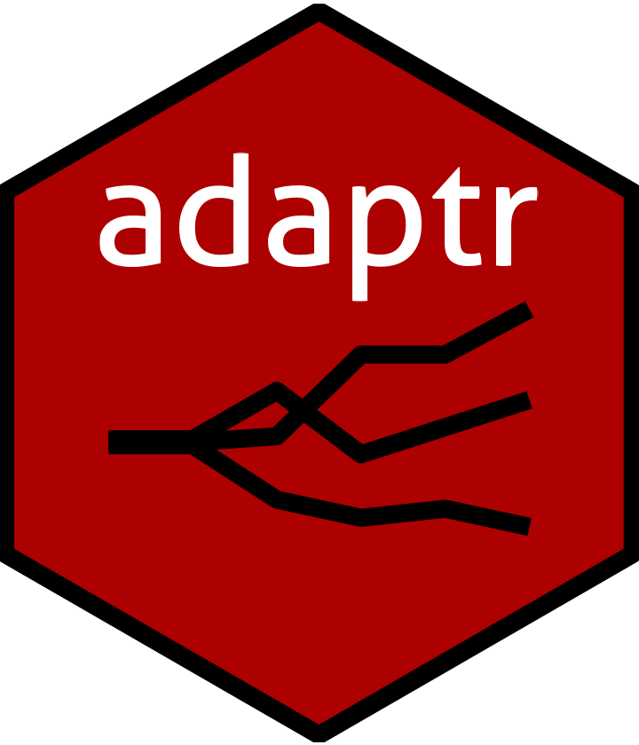

Adaptive Trial Simulator
The adaptr package simulates adaptive (multi-arm) trials using adaptive
stopping, adaptive arm dropping and/or response-adaptive randomisation.
The package is developed as part of the
INCEPT (Intensive Care Platform Trial) project,
funded primarily by a grant from
Sygeforsikringen "danmark".
Details
The adaptr package contains the following primary functions:
setup_trial()is the general function that sets up a trial specification. The simpler, special-case functionssetup_trial_binom()andsetup_trial_norm()may be used for easier specification of trial designs using binary, binomially distributed or continuous, normally distributed outcomes, respectively, with some limitations in flexibility.The
run_trial()andrun_trials()functions are used to conduct single or multiple simulations, respectively, according to a trial specification setup as described in #1.The
extract_results()andsummary()functions are used to extract or summarise the results of multiple trial simulations.The
plot_status()andplot_history()functions are used to plot the overall trial/arm statuses for multiple simulated trials or the history of trial metrics over time for single/multiple simulated trials, respectively.
For further information see the function documentation or the Overview
vignette (vignette("Overview", package = "adaptr")) for an example of how
the functions work in combination.
For further examples and guidance on setting up trial specifications, see
setup_trial documentation, the Basic examples vignette
(vignette("Basic-examples", package = "adaptr")) and the
Advanced example vignette
(vignette("Advanced-example", package = "adaptr")).
If using the package, please consider citing it using
citation(package = "adaptr").
References
Granholm A, Jensen AKG, Lange T, Kaas-Hansen BS (2022). adaptr: an R package for simulating and comparing adaptive clinical trials. Journal of Open Source Software, 7(72), 4284. doi:10.21105/joss.04284